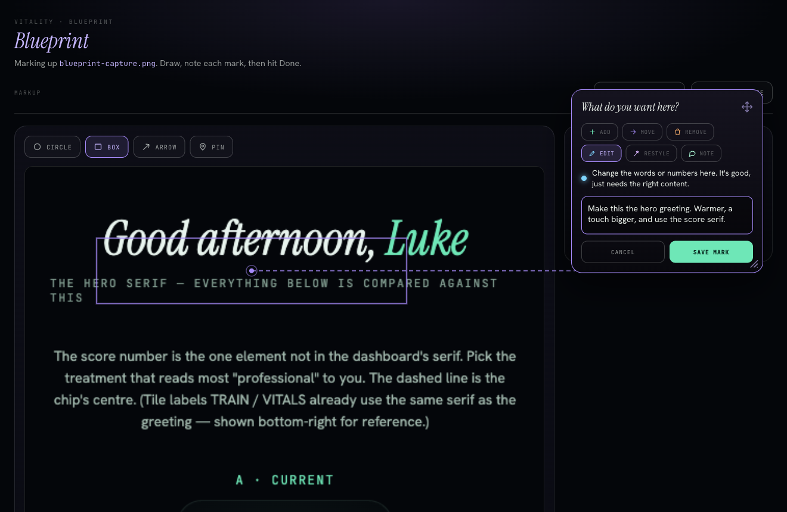

Draw on a screenshot. Hand Claude exactly what you mean, and where.

Instead of writing a paragraph about which element to change and where it sits, you draw on a picture of your app and type a short note. Claude gets the image and the intent in one shot, then makes the change. No copy-paste, no pixel coordinates in words.
Now you have /blueprint in every project.
/blueprintGive a screenshot, an image path, or a URL. A browser tab opens with it on a canvas.
Circle, box, arrow, or pin. Point at the exact thing.
Say it like you'd say it out loud. Drag the card aside, a line keeps it tied to your mark.
Claude reads your marked-up image and your notes, and gets to work.
Every mark gets one tag, so Claude knows the kind of change you want.
Put something new right here.
Pick this up and put it somewhere else.
Take this out completely.
Keep it, just fix the words or numbers.
Keep it, change how it looks.
A comment for Claude. Nothing has to change.